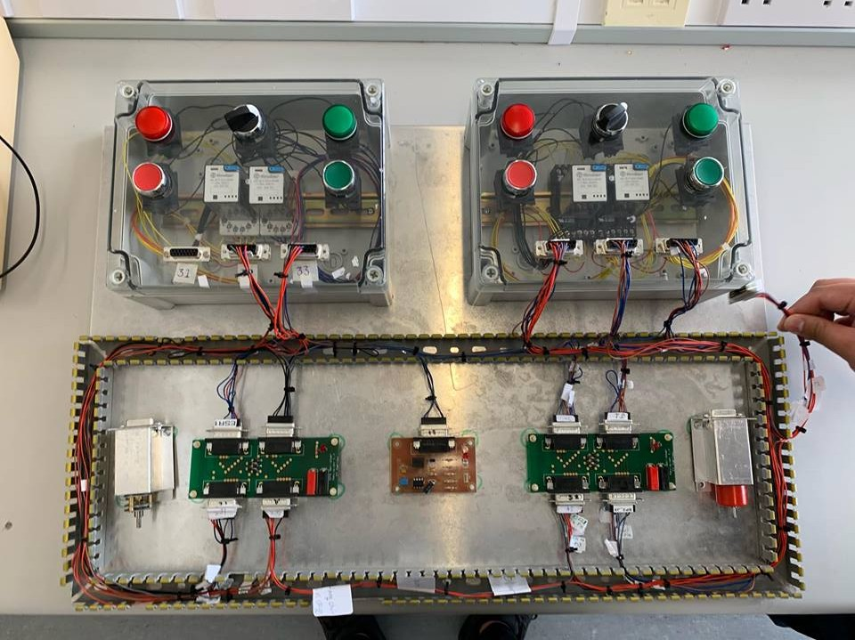
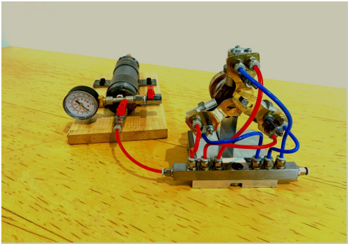
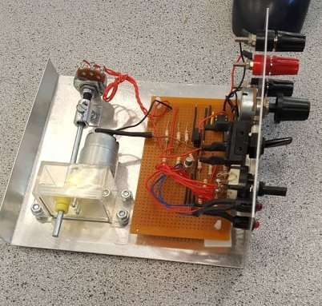

Projects & Assignments
Forward Wing Section Construction
For our year one workshop assignment we were asked to build a forward wing section. The material used was aluminium and took three months to construct. The process involved cutting, bending and forming the parts into shape. The structure was then riveted together using an air hammer with solid rivets and pop rivets. This was an enjoyable assignment and one I excelled in, receiving 87% and my work being the class example for current first year students.
Electrical Power Supply
My year two electronics project was to design and build an electrical power supply. Delivering a range of between 0V and 12V direct current. The power supply can deliver a voltage two ways. The first being with an analogue variable resistor, and the second being in steps of 1 V. The latter was accomplished by calculating the specific resistance required for each setting and then by fine tuning them on the “breadboard” for precise values. The stepped voltages are then fed through a rotary switch to the terminals. The main components are:
- Bridge type rectifier, this converts AC to DC
- 7808 Voltage regulators, supplies a constant voltage whilst delivering varying current
- Transformer, Step down supplying the voltage regulator
- LM3914, drives the bar graph display
- Resistors and capacitors, to reduce voltage and stabilize output
The display graph bar on the front used a LM3914 comparator to decide at what voltage to turn on the specific LED bar(s). The calibration for this was a little tricky and required a lot of patience. I received a grade of 93% for my efforts (top in class) and my power supply is now used as the sample for students currently making the unit.
Please ensure to check out the operational video below:
Vans RV12 Construction Project
The Vans RV 12 is a kit aircraft that IT Carlow purchased with a view to completing the aircraft over several years. I played a team leader role in this module, evaluating and allocating tasks. This involved studying the aircraft manual, looking up service bulletins thus giving me a clear idea of the design and manufacturing steps of the aircraft. The class was split into two groups, manufacturing and supply chain. My responsibilities mainly fell in the latter. Although I did get to experience all the tasks at some point.
My work involved liaising with the manufacturing team to decide what parts are required for specific times and then to organize the parts and assign them to be prepared for construction.

The parts all came in a protective plastic wrapping which had to be removed. The parts were then inspected for imperfections and scratches. Each piece was then meticulously sanded and deburred. The pieces were then cleaned with a special solvent to remove oils, dirt and glue left on the part after removal of the protective plastic coating. The part was then spray painted with zinc chromate.
Landing Gear Electrical Harness

This is our third-year electrical power supply project. The aim of this assignment was to connect the various parts of the circuit to a mock up landing gear rig. The main components of the circuit are:
- Four Relays
- Switches (NC/NO)
- Lights
- Limit switches (on LG rig)
- Splitter board with voltage regulator
- Motor
- Actuator
- D style connectors
- AWG 24 braided wire

With relay 3 energised, current flows through pin 3 (24V) to the voltage regulator providing 5V to the motor. This will cause the motor to turn in a direction that will retract the gear, once the gear has completely retracted, the limit switch will cut power to the motor and illuminate the red light. With the changeover switch selected to the gear down position, the current will flow in the opposite direction, through the motor bringing the gear down and eventually hitting the upper limit switch. This will stop the current flowing to the motor and illuminate the green light.
Please watch a video of its operation below:
Air Engine and Reservoir

Our year three mechanical project was to produce a three-cylinder radial air engine and to design and build a reservoir to drive the engine. The assignment was completed with a partner and required planning and good communication to achieve what became a satisfactory result with some lecturers showing the engine to dignitaries visiting the IT.
The main operation of the engine involves three radial cylinders housing the pistons that drive a crank pin which through the crank disc rotates the driveshaft and fly wheel. The valves operate by the crank pin revolving through the forks of the valves, which are pivoted, causing a back and forth motion supplying and extracting air from each cylinder in one revolution.

The air reservoir was designed to demonstrate the function of the engine, which it has done successfully. The construction is of hydraulic grade mild steel with welded end caps housing the valves and gauge. This was a demanding project, requiring redesigns and many alterations but was a very enjoyable project to work on and I’m very pleased with the result.
Please watch a video on this below:
In the Hangar
At IT Carlow we have a multi-million euro hangar with six aircraft. These include:
- FOUGA CM170
- Cessna 335
- Cessna 152
- Robinson R22
- Piper Pacer
- Rallye Socata
As part of the EASA compliance aspects of the course we are required to have hands on training with actual aircraft and live engines. The following is a collage of inspections, procedures etc.
Please see video below:
Whilst assessing the condition of an engine we can use a borescope. Using the screen to navigate inside the engine you can then photograph the engine and analyse the results. Here we are inspecting an internal combustion engine for cylinder wall wear.
Here is the Cessna 335 jacked and trestled. We are performing a landing gear functionality test. The aircraft is supported at four locations. The power is supplied from the ground. To ensure safety, only the relevant circuit breakers are selected whilst performing the tests.
Please see video below:
Wing Flap Control Unit

This was a second-year project that involved the design and construction of a flap control unit. The unit has the function of operating a rig with a dummy flap. The flap deflection can be set by two means. The first being of a variable resistor with the ability of selecting any specific angle desired within the operating range of between 0° and 30°. The second option of angle deflection comes from a rotary switch which allows the operator to choose 3 set angles, those are 0°, 15° and 30°.
The operation of the unit is quite complex as it requires the wing flap to send a continuous feedback and control the motor itself on the unit. When a flap angle is selected, there is a voltage differential that allows current to flow, turning the motor and the flap. When the flap is reaching the desired setting the variable resistor attached to rig will turn in tandem and at the correct value will cut off supply to the motor. This is a classic Tx Rx set up common in aircraft control surface actuation.

The unit mainly consists of:
- Operational amplifiers
- Resistors
- Relay
- LEDs
- Variable resister
- Transistors
- Switches and Chassis
This was a tough project because of the complexity involved. With a lot of interdependency in the circuit it was often difficult to isolate problems and therefore solve the issues. Clinical analysis of the circuit was paramount. The circuit was first tested on proteus and once found operational was transferred to the “breadboard” for practical confirmation. Once proven on the “breadboard” it was soldered onto a circuit board and connected to the chassis.
Programs and software
A screen grab from a year one assignment using X-Plane. We altered the wing chord and length and analysed the results and corresponding changes in flight characteristics.
Please watch video below:

A screenshot from XFoil showing the pressure envelope of a NACA 23016 aerofoil. XFoil is two-dimensional airfoil analysis program.

This graph was generated using MATLAB. It is an investigation into the efficiency of the General Electric GE 90 turbofan engine with respect to altitude.
These are screen grabs from SolidWorks. This is a great program, powerful and easy to use. This was our year two project, a one cylinder air engine. All the parts were individually made and then mated together.

Here is a sample of the Matlab code for the three-phase power analysis
matlab